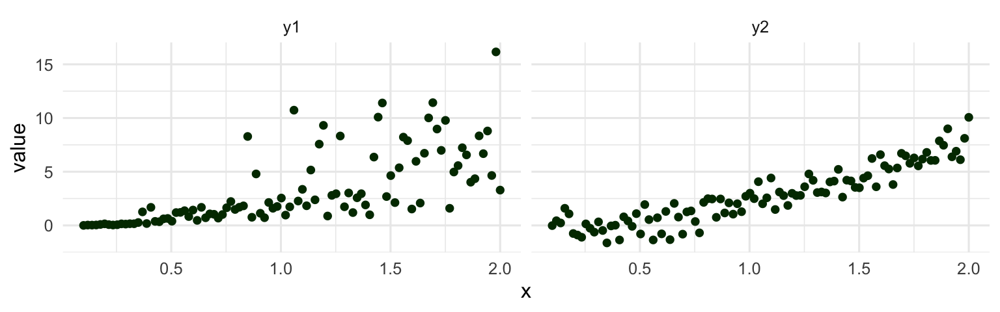
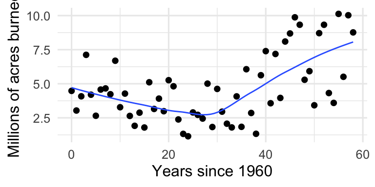
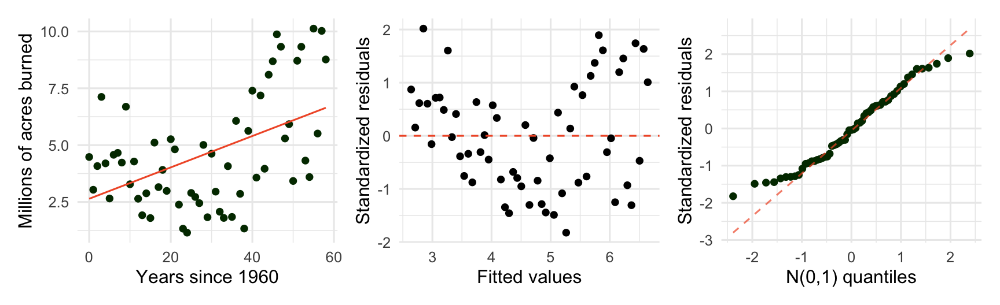
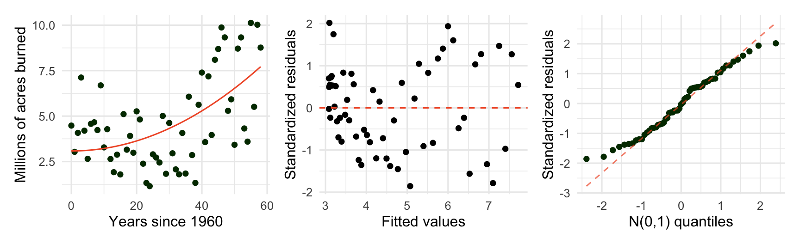
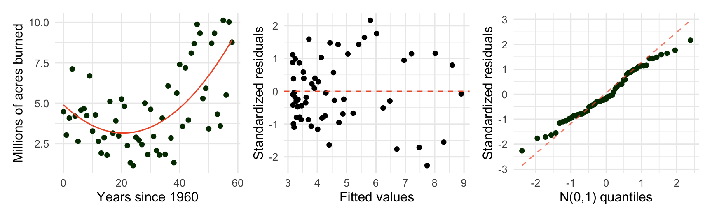
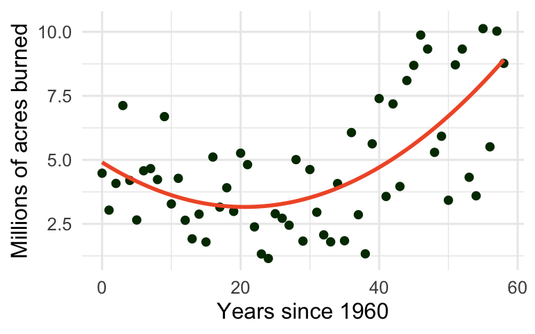
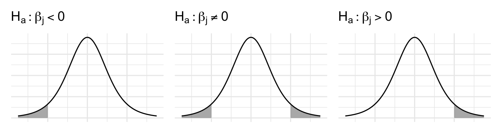
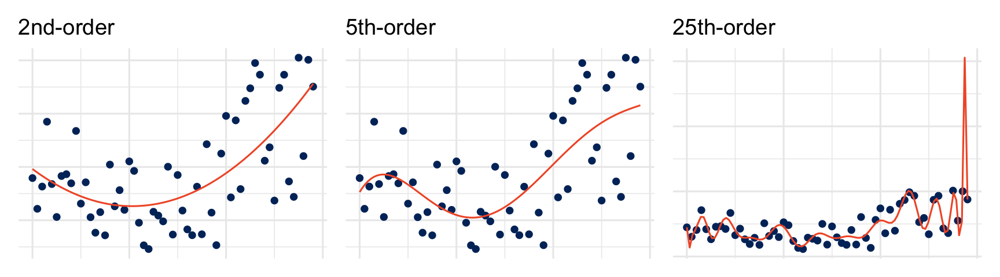
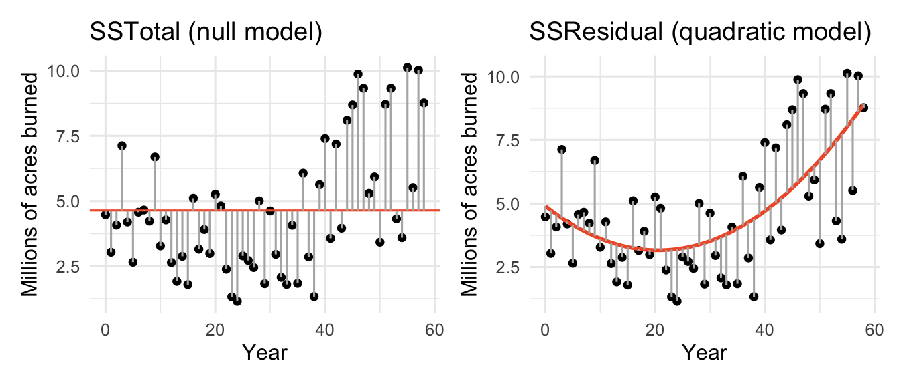

Day 08: Transformations and polynomial regression
Warm up: Consider the following two models:
- \(\log_{2}(y) = 1 + 2\log_{2}(x) + \varepsilon, \ \varepsilon \sim N(0,1)\)
- \(y = 2x^2 + \varepsilon, \ \varepsilon \sim N(0,1)\)
Show that the two models have the same \(\widehat y\)’s.
TipHint: log rules might be useful
- \(\log(ab) = \log(a) + \log(b)\)
- \(\log(a^b) = b \log (a)\)
- \(\log(a/b) = \log(a) - \log(b)\)
- \(\log_{b} b = 1\)
Even though they give the same predictions, Model (2) has constant variance but Model (1) does not. If we use Model (2) to make prediction intervals for data that actually look like Model (1), our interval will be too wide for small \(x\) and too narrow for large \(x\).
Data for today: wildfires
The National Interagency Coordination Center compiles annual wildland fire statistics for federal and state agencies (Situation Reports, used for several decades). Our goal is to model the number of acres burned over the years.

Three candidate mean functions
Option 1: SLR \(\mu\{y \mid x\} = \beta_0 + \beta_1 x\)

Option 2: transform X \(\mu\{y \mid x\} = \beta_0 + \beta_1 x^2\)

Option 3: polynomial \(\mu\{y \mid x\} = \beta_0 + \beta_1 x + \beta_2 x^2\)

The polynomial regression model
\[Y_i = \beta_0 + \beta_1 x_{i} + \beta_2 x_{i}^2 + \cdots + \beta_k x_{i}^k + \varepsilon_i, \quad \varepsilon_i \overset{\mathrm{iid}}{\sim} N(0, \sigma)\]
Assumptions (same as in SLR):
- \(\mu\{Y \mid x_i\}\) is a linear function of the ________
- I:
- For each \(x_i\), the sub-population of responses is normally distributed
- The standard deviation for each sub-population is ___________________________
Interpreting the model coefficients
With a quadratic term, we can no longer talk about “the” slope. Instead we focus on the expected change in \(y\) for a ____________ increase in \(x\).
\(\mu\{y \mid x+1\} - \mu\{y \mid x\}=\)
Notice this expected change depends on ___________

Inference about coefficients
Inference uses the same \(t\)-based tools as SLR, but with
\[\widehat{\sigma} = \sqrt{\dfrac{\sum_{i=1}^n e_i^2}{n - (k+1)}}\]
and the degrees of freedom of the reference \(t\)-distribution change to \(n - (k+1)\), where \(k\) is:
Testing a single coefficient
Hypotheses: \(H_0: \beta_j = \#\) vs. \(H_a: \beta_j \underset{>}{\overset{<}{\ne}} \text{null value}\)
Test statistic: \(t = \dfrac{\widehat\beta_j - \text{null value}}{SE(\widehat\beta_j)}\)
Reference distribution: \(t\) distribution with \(df = n - (k+1)\)
p-value: area in the tail(s) specified by \(H_a\)

Example: Wildfires
| term | estimate | std. error | t | p-value |
|---|---|---|---|---|
| Intercept | 4.903 | 0.721 | 6.80 | <0.001 |
| Year | -0.169 | 0.058 | -2.94 | 0.005 |
| Year^2 | 0.004 | 0.001 | 4.28 | <0.001 |
TipTry it
Would a higher-order polynomial (e.g. cubic, quartic, quintic) provide a better fit to the wildfire data? Work through the R handout with your group.
1. Does the cubic model appear to be necessary? Use the summary() function to explore the fitted model and run a hypothesis test for the cubic term. What do you conclude?
2. What degrees of freedom did R use for the t-distribution used to calculate the p-value for the test of the cubic term?
3. Do you notice anything curious about the inferential results for the linear and quadratic terms?
ImportantStop here
Let Amanda know if/when your group finishes the R activity
A warning about polynomials
High-order polynomial regression models will over-fit your data rather than capturing the true, generalizable trend.

Decomposing the variability
- Null model (\(\mu\{Y \mid X\} = \beta_0\)): uses \(\overline y\) as the prediction for every point
- \(\mathrm{SSTotal} = \sum(Y_i - \overline Y)^2\) – overall variability in \(Y\).
- \(\mathrm{SSResidual} = \sum(Y_i - \widehat{Y}_i)^2\) – variability left unexplained by the model - Note: \(\widehat\sigma = \sqrt{\mathrm{SSResidual}/df}\).
- \(\mathrm{SSRegression} = \mathrm{SSTotal} - \mathrm{SSResidual}\) is the variability explained by the model.

NoteCoefficient of determination (\(R^2\))
Proportion of the total variation in \(y\) explained by the model:
\[R^2 = \dfrac{\mathrm{SSRegression}}{\mathrm{SSTotal}} = 1 - \dfrac{\mathrm{SSResidual}}{\mathrm{SSTotal}}\]